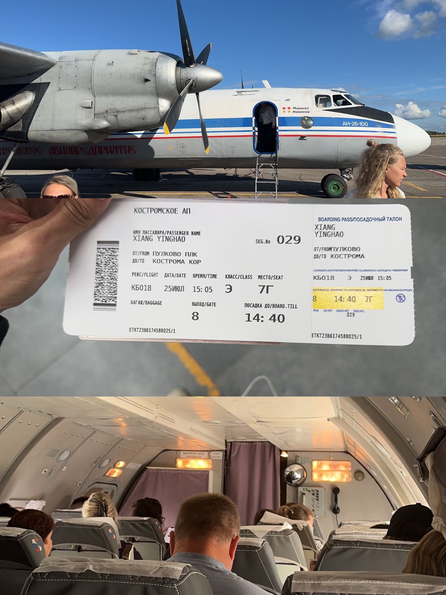

📖 出发前必读：《俄罗斯境内旅行与飞行指南 ver.2026》
安东诺夫 Ан-24/Ан-26（An-24/26）
- 安-24（北约代号：Coke，意为”焦炭”）和安-26（北约代号：Curl，意为”卷发”）是苏联时期广泛使用的双发涡桨支线客机/货机，起降性能极佳，非常适合西伯利亚和远东等基础设施较差的高寒地区。
- 客舱环境以今天的标准来看算得上是”噪音之源”，涡桨发动机的狂野轰鸣是其最大的特色。
- 两者的主要区别在于安-26有尾部货舱跳板（多用于客货混装），而安-24是纯客机布局。
| 参数 | An-26 |
|---|---|
| 首飞 | 1969年 |
| 产量 | 约1,403架 |
| 发动机 | 2× AI-24VT 涡桨（2,820 shp） |
| 载客/载货 | 40人 / 5,500 kg |
| 巡航速度 | 440 km/h |
| 航程 | 2,500 km |
| 起飞距离 | 870 m |
科斯特罗马航空公司（Kostroma Air Enterprise）（疑似已经倒闭）
官网：https://kostroma-avia.ru 官网只能用俄罗斯IP访问
购票平台：俄罗斯OTA，航司官网
俄罗斯欧洲部分硕果仅存能体验到安-26的航司之一，从圣彼得堡就有航班，是绝大多数游客最容易够得着的”破烂王”。可惜似乎只有一架飞机能飞，只飞科斯特罗马往返圣彼得堡。
个人体验还不错，航班提供茶水和小糖果，而且An-26坐起来真的很稳！

| 乘坐体验 | 排班密度 | 性价比 | 稳定程度 |
|---|---|---|---|
| 🌟🌟🌟 | 🌟 | 🌟🌟🌟🌟 | 🌟🌟🌟🌟 |
An-24/26活跃的地区：
- 圣彼得堡
- 科斯特罗马 Kostroma